Mes Travaux
La SAE est une Situation d'Apprentissage et d'Évaluation, soit un projet constitué d'une ou plusieurs tâches à réaliser par un groupe d'étudiants en vue d'atteindre le but fixé. Elle permet aux étudiants de réunir leurs compétences dans plusieurs domaines et de les associer dans un cas concret.
SAE
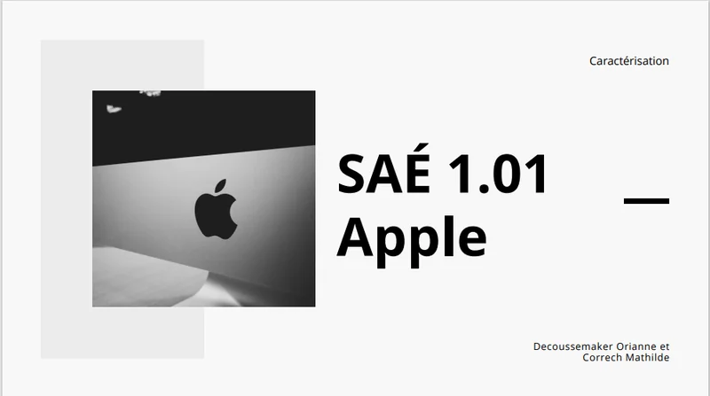
SAE 1.01
Lors de mon premier semestre de BUT GEA, j'ai réalisé plusieurs analyses d'entreprise. J'ai d'abord caractérisé Apple (statut, activité, finalités, ressources) et montré qu'il s'agit d'une multinationale à but lucratif, appuyée sur des ressources considérables et engagée vers la neutralité carbone d'ici 2030.
En groupe, j'ai ensuite mené une analyse PESTEL pour l'implantation d'une marque de vêtements de sport dans quatre pays. L'Allemagne, l'Espagne et les États-Unis offrent un environnement favorable, tandis que l'Inde présente plus de freins (faible pouvoir d'achat, restrictions à l'importation). Nous en avons conclu que la stratégie devait être adaptée à chaque pays. Enfin, j'ai modélisé le processus de commande d'un drive McDonald's sous forme de logigramme.
Ces travaux m'ont permis de développer la compétence « analyser les processus de l'organisation dans son environnement » et de maîtriser des outils comme le PESTEL et la cartographie de processus.
Avec du recul, je veillerais à mieux adapter les notions juridiques françaises au cas d'une société américaine comme Apple.
Voir le PDF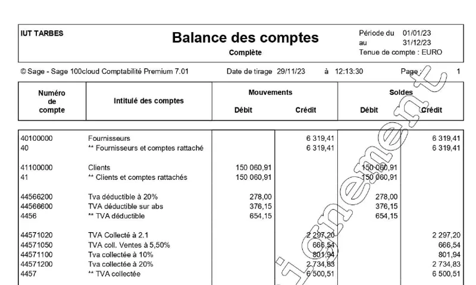
SAE 1.02
Lors de mon premier semestre de BUT GEA, j'ai tenu la comptabilité d'une pharmacie pour le mois de juillet 2023 sur le logiciel Sage 100cloud. J'ai enregistré les factures d'achats auprès des fournisseurs et les ventes de médicaments dans les journaux, en appliquant les différents taux de TVA (2,1 %, 5,5 %, 10 % et 20 %), puis j'ai édité le grand-livre et la balance des comptes.
La balance obtenue est équilibrée à 156 380,32 €. Elle fait apparaître un chiffre d'affaires de 143 560,40 € pour 5 665,26 € de charges, et une TVA à reverser à l'État de 5 846,36 €.
Ce travail m'a permis de maîtriser l'enregistrement comptable sur un logiciel professionnel, de comprendre l'enchaînement journal, grand-livre et balance, et de manipuler la TVA à plusieurs taux.
Avec du recul, j'aurais pu aller plus loin en analysant ces résultats, au-delà de leur saisie.
Voir le PDF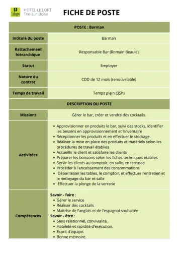
SAE 1.03
Lors de mon BUT GEA, j'ai simulé en groupe le recrutement d'un barman pour l'Hôtel Le Loft, à Trie-sur-Baïse. Nous avons rédigé la fiche de poste, défini les étapes du recrutement et construit une stratégie de communication principalement digitale (réseaux sociaux, sites d'emploi, site de l'hôtel, médias locaux).
Nous avons ensuite produit l'ensemble des documents du processus en français, en anglais et en espagnol : annonces, convocations à l'entretien, lettres d'acceptation et de refus. Après présélection et entretiens, nous avons retenu la candidate la plus expérimentée.
Ce projet m'a permis de développer la compétence « piloter les relations avec les parties prenantes », en adaptant ma communication à des candidats et à des situations différentes, y compris pour annoncer un refus avec tact. J'ai appris les étapes d'un recrutement et la rédaction de courriers RH professionnels dans trois langues.
Avec du recul, une relecture commune nous aurait permis de mieux harmoniser les documents rédigés à plusieurs : le nom de l'hôtel, les dates et la localisation varient parfois d'un courrier à l'autre.
Voir le PDF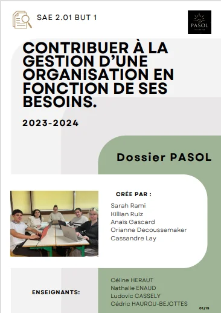
SAE 2.01
En BUT GEA, j'ai participé à la SAE 2.01 « Contribuer à la gestion d'une organisation en fonction de ses besoins », réalisée en seulement deux jours. Notre groupe devait aider PASOL, une PME lourdaise qui fabrique et installe des panneaux solaires, à faire face à la concurrence chinoise. Avec deux camarades, j'ai pris en charge la partie gestion le premier jour et la partie commerciale le second.
Côté commercial, nous avons construit un argumentaire selon la méthode CAP/SONCASE, un questionnaire de découverte des besoins clients et une matrice de décision multicritères. Côté gestion, nous avons comparé sur Excel la rentabilité des trackers et des panneaux fixes, calculé les coûts de revient des panneaux pour identifier le plus rentable, et établi un devis client.
Ce projet m'a permis de mobiliser la compétence « aider à la prise de décision » et de maîtriser des outils comme Excel et la méthode CAP/SONCASE. Le format très court m'a appris à m'organiser vite et à répartir le travail efficacement.
Avec du recul, je me suis sentie plus à l'aise sur les calculs que sur la rédaction commerciale, un point que je souhaite continuer à travailler. Une relecture finale commune nous aurait aussi permis d'harmoniser nos conclusions : le dossier présente parfois le tracker comme avantageux, alors que nos calculs recommandent le panneau fixe.
Voir le PDFSAE 4 GC2F 02
Dans le cadre de mon BUT GEA, j'ai réalisé en groupe le diagnostic d'un projet de rachat : M. Lapompe, gérant d'un garage tarbais, envisageait d'acquérir l'entreprise Garo Retro. Placés dans le rôle d'un cabinet d'expertise comptable, nous devions lui indiquer si ce rachat était viable.
Après une étude de l'environnement, des cycles clients et personnel et une analyse SWOT, nous avons construit les états financiers prévisionnels sur trois ans. Ils montrent une bonne gestion des créances, un BFR négatif et une trésorerie excédentaire chaque année, mais une forte baisse de rentabilité en année 2, liée à deux recrutements, avant un redressement fragile en année 3. Nous avons conclu que le rachat était envisageable, à condition de maîtriser les charges, d'améliorer les marges et de limiter l'endettement.
Ce projet m'a permis de mobiliser les compétences « analyser les processus de l'organisation dans son environnement » et « aider à la prise de décision ». J'ai appris à interpréter des ratios et des documents prévisionnels, puis à transformer des chiffres en recommandation claire pour un dirigeant.
Avec du recul, j'aurais pu approfondir les forces et faiblesses internes de l'entreprise et chiffrer davantage les mesures proposées.
Voir le PDFSAE 5.01
Dans le cadre de mon BUT GEA à l'IUT de Tarbes, j'ai réalisé en groupe un audio-guide en espagnol du campus, destiné à un visiteur étranger, ainsi qu'un e-mail de demande de devis pour des casques et des boîtiers. Après avoir repéré les lieux et construit un itinéraire, nous avons rédigé un script en français, puis l'avons traduit et réparti en huit parties. J'ai pris en charge la présentation du département GEA, des amphithéâtres et du service communication.
Ce travail m'a permis de mobiliser la compétence « piloter les relations avec les parties prenantes » en communiquant à l'oral dans une langue étrangère, avec un ton clair et accueillant adapté à un visiteur. J'ai progressé en fluidité et en prononciation, et enrichi mon vocabulaire sur les formations et les services universitaires. J'ai aussi appris à coordonner mon passage avec celui de mes camarades pour garder une visite cohérente.
Avec du recul, j'aurais pu harmoniser la traduction d'« amphithéâtre », que j'ai rendue tantôt par aula magna, tantôt par auditorio, et mieux expliquer le sigle GEA à un public étranger.
Voir le PDFTravaux collectifs — Économie
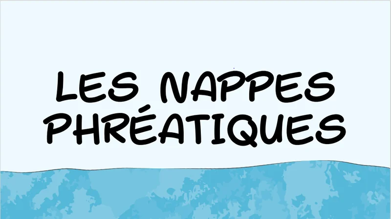
La préservation des nappes phréatiques
J'ai réalisé en groupe un exposé sur les menaces qui pèsent sur les nappes phréatiques : pollution, changement climatique et surexploitation, l'agriculture représentant plus de la moitié de l'eau consommée en France. Pour chacune, nous avons présenté des solutions concrètes : réduction des produits chimiques, zones de protection des captages, principe pollueur-payeur, recharge artificielle des nappes et pratiques d'irrigation plus sobres. Ce travail m'a permis d'analyser un enjeu environnemental et réglementaire qui concerne directement les organisations.
Avec du recul, je veillerais à mieux vérifier et sourcer certaines données de la présentation.
Voir le PDF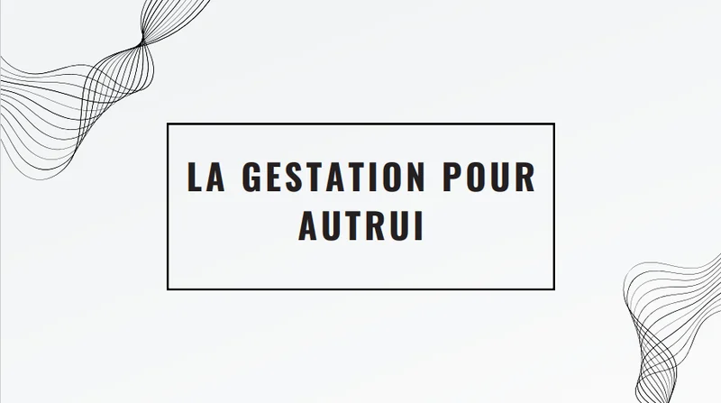
La gestation pour autrui
J'ai présenté en groupe un exposé sur les intérêts d'une légalisation de la GPA, interdite en France. Nous avons analysé sa transformation en service marchand, les facteurs qui en fixent le prix et ses avantages et risques, avant d'étudier l'encadrement légal au Nevada. Nous avons conclu qu'une légalisation encadrée permet de limiter les dérives liées à la marchandisation. Ce travail m'a appris à traiter un sujet sensible en croisant enjeux économiques, juridiques et éthiques.
Avec du recul, nous aurions gagné à diversifier nos références, plusieurs de nos sources étant des agences commerciales de GPA.
Voir le PDFBlaBlaCar et l'économie collaborative
J'ai réalisé en groupe un exposé sur l'impact du covoiturage sur nos modes de transport, à travers l'exemple de BlaBlaCar. Après avoir défini l'économie collaborative, nous avons comparé les offres sur un trajet Tarbes-Narbonne : le covoiturage s'est révélé aussi économique que le bus et bien moins cher que le train. Nous avons conclu que BlaBlaCar est devenu une alternative majeure aux transports traditionnels, avec un chiffre d'affaires presque doublé entre 2021 et 2022. Ce travail m'a permis d'analyser un modèle économique innovant et son impact sur son environnement.
Avec du recul, il aurait été intéressant de croiser davantage nos sources, plusieurs chiffres clés provenant de BlaBlaCar elle-même.
Voir le PDFLa pensée économique : néokeynésiens et économie du bien-être
En BUT GEA, j'ai présenté en groupe un exposé sur deux courants de la pensée économique. Nous avons retracé l'héritage de Keynes, des post-keynésiens jusqu'aux néokeynésiens comme Stiglitz et Krugman, qui expliquent le chômage involontaire par les imperfections du marché, notamment l'asymétrie d'information. Nous avons ensuite présenté l'économie du bien-être, de Pigou et ses externalités jusqu'à Amartya Sen et l'indice de développement humain. Ce travail m'a permis de mieux comprendre l'environnement économique dans lequel évoluent les organisations et de synthétiser des théories complexes à l'oral.
Avec du recul, une relecture plus attentive des diapositives nous aurait permis de corriger quelques erreurs et de vérifier le classement de certains auteurs.
Voir le PDFTravaux collectifs — Marketing
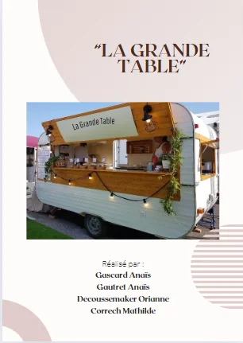
Le cas « La Grande Table »
Notre tâche finale en marketing : nous avons réalisé un diagnostic de l'entreprise ainsi qu'une stratégie marketing. Nous avons proposé un concept de Foodtruck avec la méthode des 4P (Produit, Prix, Distribution, Communication).
Voir le PDFTravaux collectifs — Espagnol
Boluz
Nous avons créé un concept dans le cadre d'un projet en espagnol. Pour cela, nous avons conçu et designé des boules de pétanque.
Voir le PDF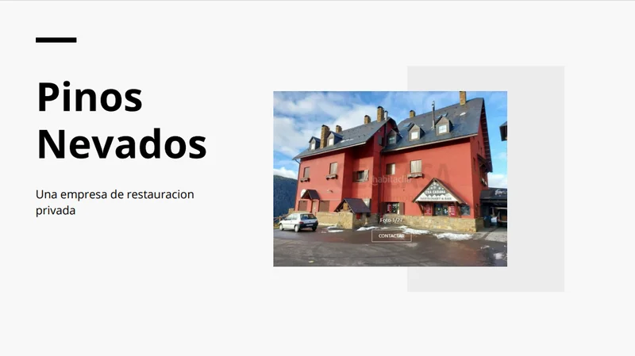
Piños Nevados
Nous avons créé une entreprise fictive : un restaurant dans les montagnes des Pyrénées, en utilisant des données réelles. Nous avons réalisé son plan de financement, sa carte, son équipe, etc. À l'issue de ce projet, nous avons imaginé une demande de financement auprès d'une banque.
Voir le PDFProjet tutoré
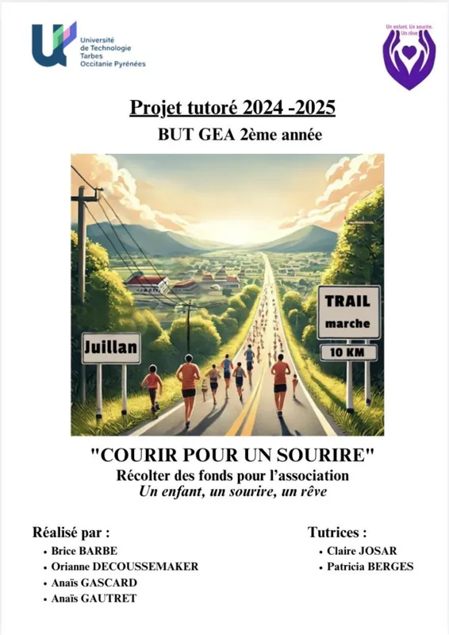
« Courir pour un sourire »
Durant nos troisième et quatrième semestres, nous avons organisé en groupe une course pédestre caritative au profit de l'association « Un enfant, un sourire, un rêve », qui œuvre pour améliorer le quotidien des enfants hospitalisés à Tarbes. Nous avons pris en charge le parcours, la sécurité, le chronométrage, les bénévoles et la communication, ainsi que l'organisation d'un loto. Malgré l'annulation de la course, nous avons collecté plus de 2 000 € pour l'association.
Voir le PDFTravaux individuels
Tout au long de ma première année en BUT GEA, j'ai effectué plusieurs travaux personnels. Voici les deux grands projets de l'année.
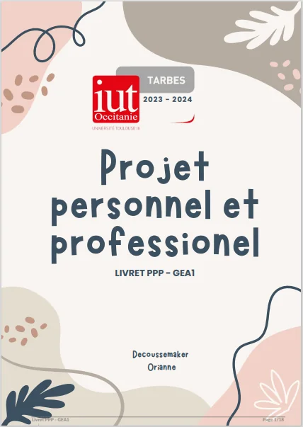
Projet personnel et professionnel
J'ai réalisé un dossier sur mon projet personnel et professionnel, dans lequel j'ai exposé mes choix d'orientations et mes ambitions, ainsi que l'analyse de plusieurs métiers et de mes traits de personnalité à l'aide du site Parcouréo.
Voir le PDF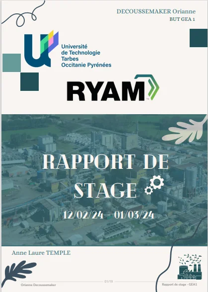
Rapport de stage
Stage effectué chez RYAM du 12/02/2024 au 01/03/2024, encadré par Anne Laure Temple — IUT de Tarbes, BUT GEA 1.
Voir le PDF